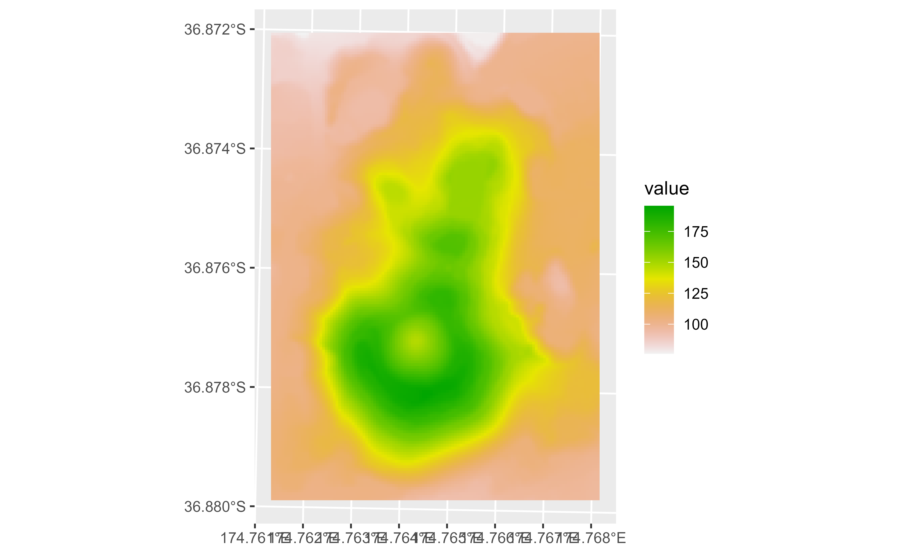
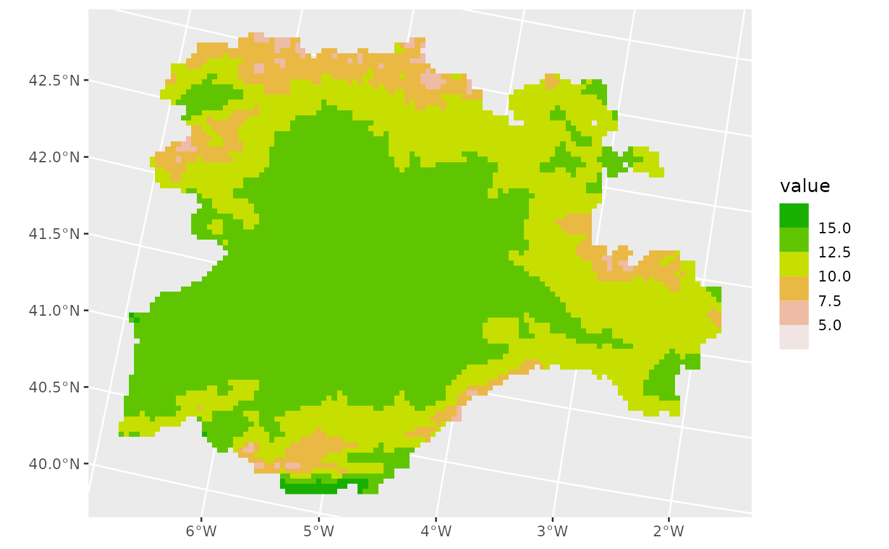
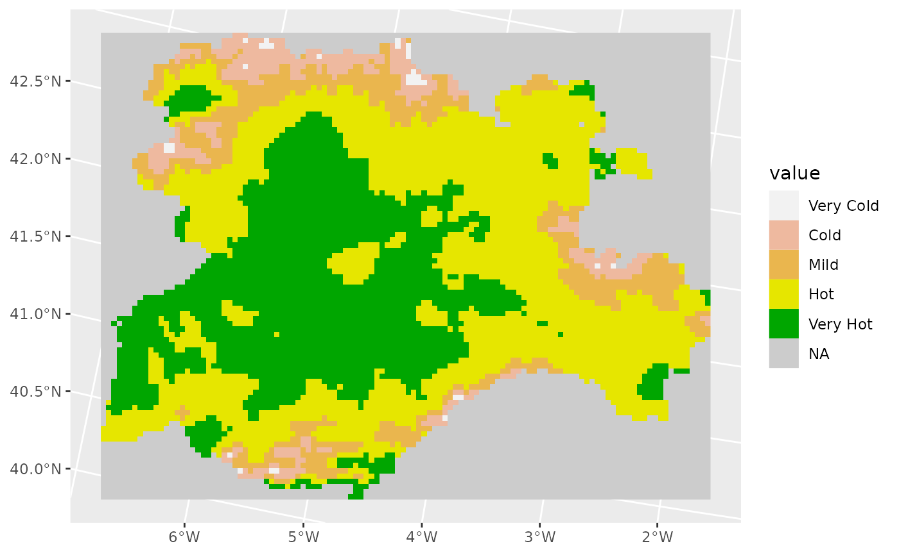

Implementation of the classic color palettes used by default by the
terra package (see terra::plot()). Three fill scales are provided:
scale_fill_terrain_d(): For discrete values.scale_fill_terrain_c(): For continuous values.scale_fill_terrain_b(): For binning continuous values.
Usage
scale_fill_terrain_d(..., alpha = 1, direction = 1)
scale_fill_terrain_c(
...,
alpha = 1,
direction = 1,
na.value = NA,
guide = "colourbar"
)
scale_fill_terrain_b(
...,
alpha = 1,
direction = 1,
na.value = NA,
guide = "coloursteps"
)Arguments
- ...
Other arguments passed on to
discrete_scale(),continuous_scale(), or binned_scale to control name, limits, breaks, labels and so forth.- alpha
The alpha transparency, a number in [0,1], see argument alpha in
hsv.- direction
Sets the order of colors in the scale. If 1, the default, colors are ordered from darkest to lightest. If -1, the order of colors is reversed.
- na.value
Missing values will be replaced with this value.
- guide
A function used to create a guide or its name. See
guides()for more information.
See also
terra::plot(), ggplot2::scale_fill_viridis_c()
Other ggplot2 utils:
geom_spatraster_rgb(),
geom_spatraster(),
ggspatvector
Examples
# \donttest{
filepath <- system.file("extdata/cyl_temp.tif", package = "tidyterra")
library(terra)
cyl_temp <- rast(filepath)
# Modify with tidyverse methods
library(dplyr)
continous <- cyl_temp %>% select(tavg_05)
library(ggplot2)
ggplot() +
geom_spatraster(data = continous) +
scale_fill_terrain_c()

# Binned
ggplot() +
geom_spatraster(data = continous) +
scale_fill_terrain_b(breaks = seq(5, 20, 2.5))

# With discrete values
factor <- continous %>% mutate(tavg_05 = cut(tavg_05,
breaks = c(0, 7, 9, 11, 13, 15),
labels = c(
"Very Cold", "Cold", "Mild", "Hot",
"Very Hot"
)
))
ggplot() +
geom_spatraster(data = factor) +
scale_fill_terrain_d(na.value = "gray80")

# }